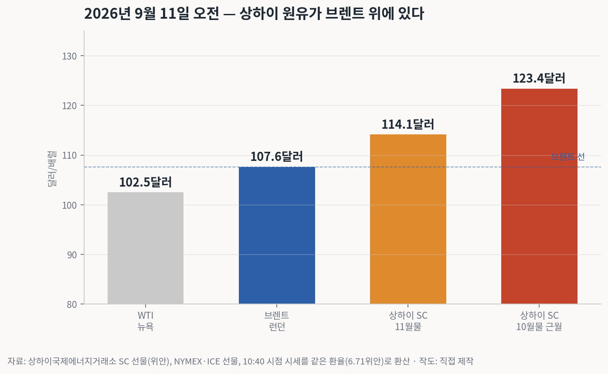
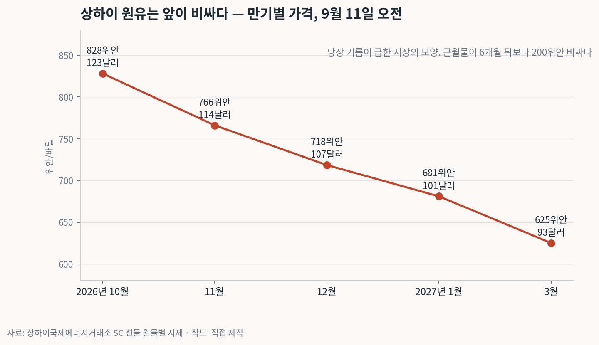
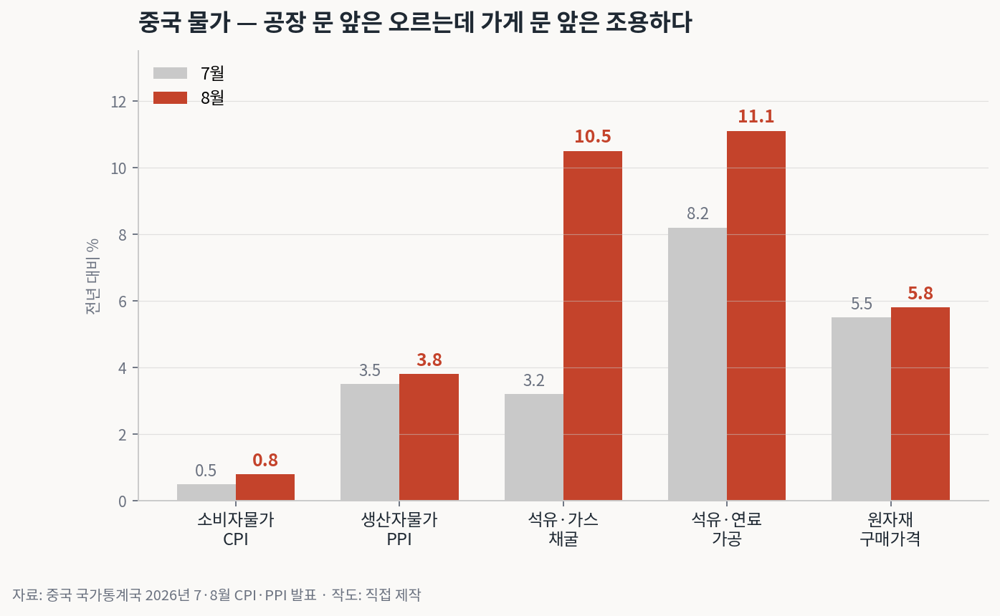
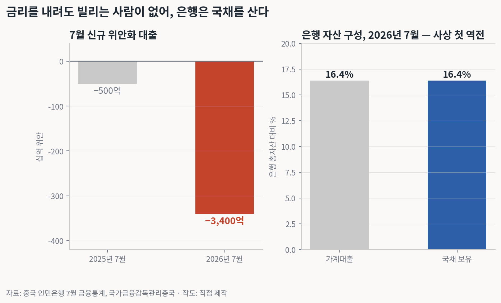
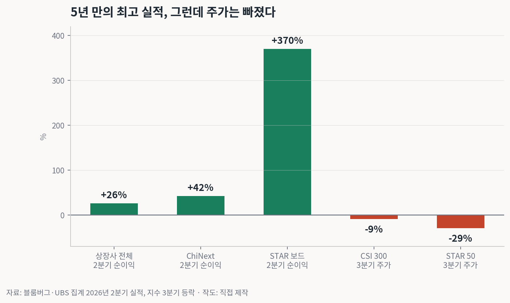
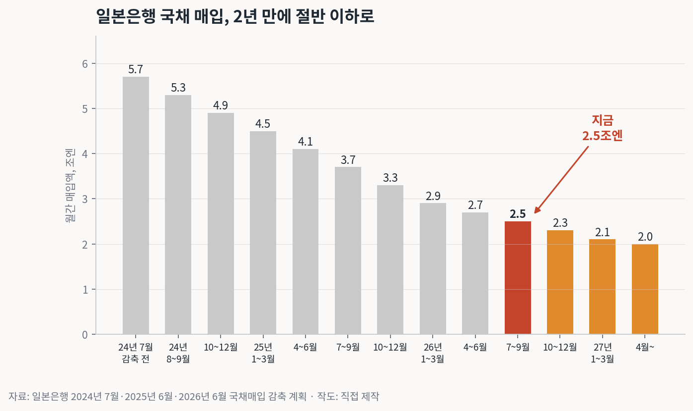
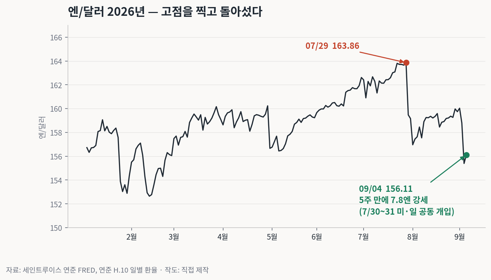
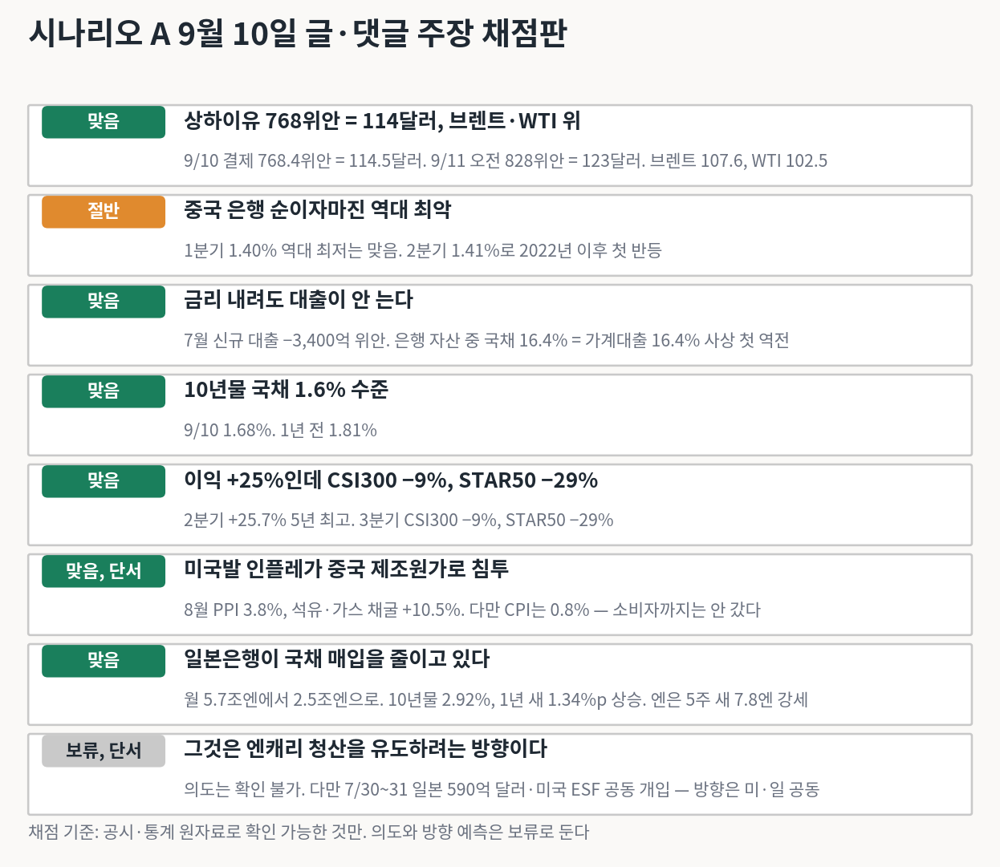

미국에 중요한 것은 유가가 얼마냐가 아니라 WTI가 어디에 있느냐다
오늘 오전 상하이 원유 선물 근월물이 배럴당 828위안까지 올랐습니다. 달러로 바꾸면 123달러입니다. 같은 시각 브렌트는 107.6달러, WTI는 102.5달러였습니다.
18편에서 소개한 시나리오 A의 주장 하나가 있었습니다. 미국의 목표는 유가를 누르는 게 아니라 상하이유·브렌트·WTI 순서의 층을 만드는 것이라는 겁니다. 그 시나리오가 어젯밤 새 글을 올렸고, 댓글에서 두 갈래가 더 나왔습니다. 오늘은 셋을 한 번에 봅니다.
첫째, 상하이 유가와 중국의 잃어버린 n년. 둘째, 중국의 넘치는 예금이 위기인가 무기인가 하는 논쟁. 셋째, 일본은 엔캐리를 접는 방향으로 간다는 주장입니다. 하나씩 원자료로 채점합니다.

시나리오 A는 어제 결제가 768위안, 달러로 114달러라고 썼습니다. 확인해보니 9월 10일 결제가 768.4위안이고 위안화 환율 6.71로 나누면 114.5달러입니다. 숫자가 맞습니다.
그런데 오늘 오전에 그 위에 7.8%가 더 얹혔습니다. 근월물 828위안, 123달러. 브렌트보다 16달러 비싸고 WTI보다 21달러 비쌉니다. 시나리오 A가 목표라고 했던 세 층이 숫자로 서 있는 겁니다.

단서를 하나 달아야 합니다. 828위안은 이달 말 거래가 끝나는 근월물이라 마지막 물량을 잡으려는 수요가 얹힌 값입니다. 한 달 뒤 11월물은 766위안, 114달러입니다. 그래도 브렌트 위입니다. 근월물 과열을 걷어내도 층은 유지됩니다.
만기 곡선 자체가 말해주는 것도 있습니다. 10월물 828, 11월물 766, 12월물 719, 내년 3월물 625. 당장 기름이 급한 시장의 모양입니다. 26편에서 본 중국의 재고 소진과 이란 물량 증발이 이렇게 가격에 찍혀 있습니다.
시나리오 A의 두 번째 주장은 미국발 인플레가 중국 제조원가로 침투하고 있고, 내수가 얼어 소비자에게 전가할 수 없으니 생산자가 마진을 갉아먹으며 버틴다는 것입니다.

8월 생산자물가가 3.8% 올랐습니다. 3년 넘게 마이너스이던 지표가 돌아선 것도 올해 일인데, 안을 보면 방향이 선명합니다. 석유·가스 채굴 부문 가격이 7월 3.2%에서 8월 10.5%로 한 달 만에 세 배가 됐고, 전월 대비로만 6.1% 뛰었습니다. 연료 가공은 11.1%입니다.
반면 소비자물가는 0.8%입니다. 공장이 사들이는 원자재 값은 5.8% 올랐는데 소비자가 내는 값은 거의 안 움직였습니다. 그 차이만큼을 생산자가 먹고 있다는 뜻이고, 시나리오 A의 설명과 맞습니다.
다만 한 가지는 짚어야 합니다. 소비자물가 0.8%를 인플레라고 부르기는 어렵습니다. 지금 중국에 들어온 것은 원가 인플레이지 물가 인플레는 아직 아닙니다. 그게 소비자에게 넘어가는 순간이 시나리오 A가 말하는 다음 단계입니다.

7월 신규 위안화 대출이 마이너스 3,400억 위안이었습니다. 새로 나간 대출보다 갚은 대출이 그만큼 많았다는 뜻입니다. 1년 전 같은 달은 마이너스 500억이었으니 일곱 배 커졌습니다.
그래서 은행이 돈을 어디에 두느냐. 국채입니다. 7월 기준 은행 총자산에서 국채가 차지하는 비중이 16.4%로 올라 가계대출 비중 16.4%와 같아졌습니다. 가계보다 정부에 빌려준 돈이 많아지는 문턱입니다. 10년물 국채금리가 1.68%까지 내려온 이유가 이겁니다.
시나리오 A는 이 예금 편중을 방어력이 아니라 성장 동력 상실이라고 읽습니다. 1990년대 일본이 저축이 없어서 잃어버린 30년을 겪은 게 아니라는 비유인데, 대출과 국채 숫자만 놓고 보면 그 독법이 맞습니다.
시나리오 A는 중국 상업은행의 순이자마진(Net Interest Margin, NIM)이 역대 최악이라고 썼습니다. 국가금융감독관리총국 자료를 보면 1분기 1.40%가 역대 최저 맞습니다. 1분기 은행 순이익은 3.7% 줄었습니다.
그런데 2분기는 1.41%입니다. 1bp 올랐고, 2022년 이후 처음으로 분기 반등입니다. 바닥에 붙어 있다는 방향은 맞지만 계속 나빠지고 있다는 표현은 한 분기 낡았습니다. 채점판에 절반으로 적는 이유입니다.

2분기 중국 상장사 순이익이 전년 대비 25.7% 늘었습니다. 5년 만의 최고 실적 시즌입니다. STAR 보드는 370%, ChiNext는 42%였습니다. AI 반도체와 인프라에 정부가 밀어 넣은 돈이 실적으로 찍힌 겁니다.
그런데 3분기 들어 CSI 300은 9%, STAR 50은 29% 내렸습니다. 시나리오 A의 해석은 이렇습니다. 부품과 장비를 팔아 이익을 내도 최종적으로 사줄 가계와 기업이 무너져 있다. 그래서 실적 호조를 현금화 기회로 쓴다는 겁니다.
시장 쪽 설명도 비슷합니다. AI 투자를 약속이 아니라 비용으로 보기 시작했고, 위안화 강세로 환차손 1,070억 위안이 났고, 신규 상장이 유동성을 빼갔다는 것입니다. 갈라지는 이유가 수요에 있다는 점에서 두 설명은 같은 곳을 가리킵니다.
여기서 두 번째 갈래가 나옵니다. 중국의 예금 편중을 두고 정반대 해석이 있습니다. 위기가 아니라 강점이라는 쪽의 논리는 이렇습니다. 정부가 AI와 반도체에 밀어 넣을 수 있는 정책 자본이고, 서방에 금융위기가 와도 중국은 이 방어벽으로 버틴다는 것입니다.
시나리오 A의 반박은 두 단계입니다. 먼저, 그걸 무슨 이름으로 부르든 실체는 국가가 예금자 돈의 방향을 정하는 것이다. 그리고 그것이 실제로 작동하고 있다. 2분기 이익 급증을 만든 게 그 정책 자본이라는 겁니다.
문제는 그다음입니다. 부품과 장비를 팔아 이익을 내도 사줄 가계와 기업이 무너져 있으면 선순환이 없습니다. 그래서 실적이 최고인데 주가는 빠지고, 실적 발표를 현금화 기회로 쓰는 겁니다. 정부가 강제로 밀어 넣어도 이익의 질이 낮아 오래 못 간다는 것이 시나리오 A의 결론입니다.
이 논쟁은 채점하기 어렵습니다. 예금이 정책 자본이 될 수 있다는 것도 사실이고, 그 자본이 만든 이익을 시장이 안 사주는 것도 사실입니다. 다만 앞 절의 숫자들, 대출 감소와 국채 편중과 실적·주가 괴리는 성장 동력 상실 쪽 해석에 무게를 싣습니다. 1990년대 일본이 저축이 없어서 잃어버린 30년을 겪은 게 아니라는 비유가 그래서 나옵니다.
세 번째 갈래는 일본입니다. 한 독자가 일본의 잃어버린 30년과 지금 중국을 비교하자, 시나리오 A가 일본 쪽 그림을 이렇게 그렸습니다.
엔캐리(yen carry trade)는 일본이 세계에 공짜 돈을 빌려주고 배당과 이자를 받는 구조였다. 그래서 내수가 죽어도 해외소득으로 버틸 수 있었지만, 그 구조가 디플레를 고착시켰다. 이제 일본에도 인플레가 왔으니 그 구조를 더 유지할 수 없다. 그렇다면 한 번의 고통을 겪더라도 캐리를 청산하고 엔화를 회수하는 것이 일본에 더 낫다. 일본은행이 국채 매입을 줄이는 것이 그 방향의 증거다.

매입 축소는 사실입니다. 2024년 7월 월 5.7조엔이던 매입을 분기마다 4천억엔씩 줄여 올해 1~3월 2.9조엔이 됐고, 4월부터는 2천억엔씩 줄여 지금 2.5조엔, 내년 4월부터 2.0조엔입니다. 2년 만에 절반 이하입니다.
결과도 숫자로 나옵니다. 일본 10년물 국채금리가 2.92%로 1년 전 1.58%에서 1.34%포인트 올랐고, 정책금리는 1.00%에서 다음 주 회의에서 1.25%로 오를 것이 거의 확실시됩니다. 31년 만의 수준입니다.

그리고 엔화입니다. 7월 29일 163.86엔이던 환율이 9월 4일 156.11엔입니다. 5주 만에 7.8엔 강세. 다만 이 강세는 시장이 혼자 만든 게 아닙니다. 7월 29일 엔이 40년 만의 최저로 밀리자 7월 30일 일본 재무성이 약 590억 달러를 팔아 엔을 샀고, 이튿날에는 미국 재무부가 외환안정기금(Exchange Stabilization Fund, ESF)으로 함께 개입했습니다. 미국의 엔 매수 개입은 1998년, 2011년에 이어 30년 만에 세 번째입니다.
베센트 재무장관은 성명에서 일본의 시장·통화 조치를 강력히 지지한다고 했고, 일본은행의 추가 인상까지 촉구했습니다. 9월 1일에는 일본이 엔을 더 강하게 만들 조치를 할 것으로 본다고 했습니다. 2013년 아베노믹스 때 미국이 엔 약세를 묵인했던 것과 정반대입니다.
그래서 채점판에서 이 항목은 둘로 나눕니다. 매입 축소, 금리 상승, 엔 강세는 전부 사실입니다. 캐리 청산을 유도하려는 의도인지는 일본은행 원자료로는 확인이 안 됩니다. 공식 명분은 국채시장 기능 회복입니다. 다만 미국 재무부가 공동 개입과 성명으로 같은 방향에 섰다는 것은 사실이라, 의도는 보류하되 방향은 미·일 공동으로 확인이라고 적습니다.
다만 이 셋이 같은 방향을 가리키고 있다는 점은 남습니다. 미국이 상하이유 위에 층을 만들고, 중국은 그 원가를 소비자에게 넘기지 못하고, 일본은 밖에 빌려준 돈을 거둬들이는 쪽으로 움직입니다. 아시아의 두 경제가 다른 이유로 같은 압력을 받는다는 것이 이번 글의 세 갈래를 하나로 묶는 선입니다.
이 글이 중국 이야기로 읽히겠지만, 시나리오 A의 결론은 미국입니다. 미국은 산유국이고 전쟁 땅이 아니니 유가 100달러를 상대적으로 견딜 수 있고, 그 유가가 중국 제조업을 고사시킨다는 것입니다.
어젯밤 미국 8월 생산자물가가 나왔습니다. 전월 대비 0.4%, 전년 대비 5.4%, 근원도 4.7%입니다. 에너지가 한 달에 4.2% 뛰었습니다. 10년물 국채금리는 4.90%로 올라섰고 WTI는 100.58달러에 마감했습니다. 9월 회의 인상 확률은 65%입니다.
17편에서 걸어둔 조건선이 오늘 밤 소비자물가에서 채점됩니다. 근원 0.3%가 갈림길이었습니다. 생산자물가가 먼저 뜨겁게 나온 만큼, 오늘 밤 숫자가 그 선을 넘으면 시나리오 A의 미국 쪽 그림도 한 칸 전진합니다.

여덟 개 중 여섯 개가 원자료와 맞고, 하나는 한 분기 낡았고, 하나는 의도라서 보류입니다. 이 시리즈에서 채점하는 건 확인 가능한 사실뿐입니다. 상하이유가 브렌트 위에 있는 것은 사실이고, 그것이 누군가의 설계인지는 사실이 아니라 해석입니다. 그 구분은 계속 지키겠습니다.
다음 확인 지점은 오늘 밤 미국 소비자물가, 다음 주 중국 8월 신규 대출, 그리고 9월 17~18일 일본은행 회의입니다.
자료: 상하이국제에너지거래소 SC 선물 시세, NYMEX·ICE 선물, 중국 국가통계국 2026년 8월 CPI·PPI, 중국 인민은행 7월 금융통계, 국가금융감독관리총국 2분기 은행 경영지표, 일본은행 국채매입 계획(2024.7·2025.6·2026.6), 일본 재무성 외환평형조작 실적(2026.7), 미국 재무부 성명(2026.7.31)·상원 은행위 서한(2026.8.13), 세인트루이스 연준 FRED 엔/달러, 미국 노동통계국 8월 PPI, CME FedWatch.
이 글은 투자 권유가 아니며 특정 종목이나 상품의 매수·매도를 추천하지 않습니다. '시나리오 A'는 검증 대상 관점을 익명화한 표기입니다.